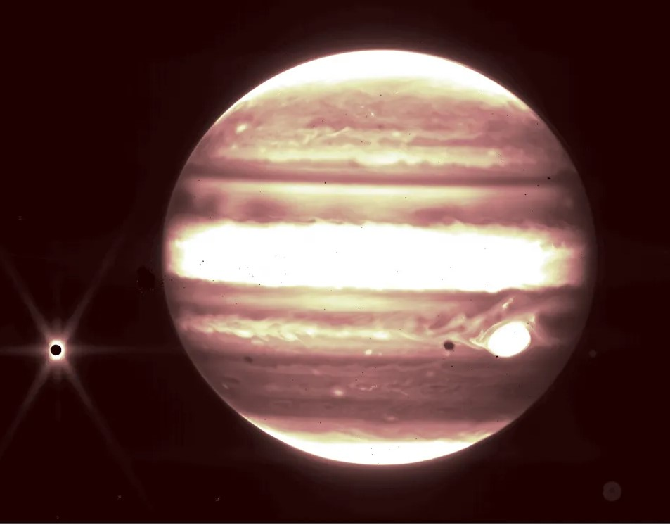
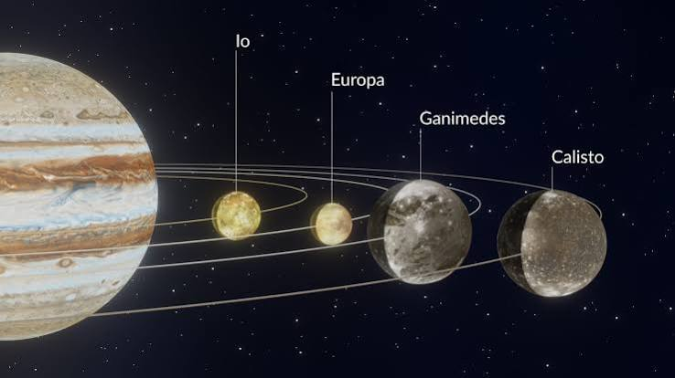

Júpiter, o maior planeta do nosso Sistema Solar, é uma imponente esfera gasosa que intriga e fascina astrônomos e entusiastas do espaço há séculos. Com sua massa colossal e aparência majestosa, Júpiter desempenha um papel fundamental na dinâmica do nosso sistema planetário. Neste artigo, mergulharemos nas características e curiosidades desse gigante gasoso.
Júpiter é um planeta gasoso, constituído principalmente de hidrogênio e hélio, com traços de outras substâncias, como metano e amônia. Essa composição o torna distinto dos planetas rochosos, como a Terra. Com um diâmetro impressionante de aproximadamente 142.984 km, Júpiter é o maior planeta do Sistema Solar. Além disso, sua massa é tão grande que a Terra possui uma massa aproximadamente 318 vezes menor que a do nosso planeta.

Uma das características mais marcantes de Júpiter é a Grande Mancha Vermelha, uma gigantesca tempestade que ocorre na sua atmosfera há séculos. A Grande Mancha Vermelha é um fenômeno permanente e tem sido observada desde o século XVII. Essa tempestade é tão grande que poderia engolir três Terras. Apesar de sua longevidade, a causa exata de sua formação ainda é objeto de estudo e pesquisa.
Júpiter também possui um sistema de anéis, embora menos proeminente do que os anéis de Saturno. Esses anéis são compostos principalmente de partículas de poeira e pequenos fragmentos rochosos. Sua origem está relacionada aos impactos de meteoritos em algumas de suas luas, que liberam partículas de poeira no espaço.
Além dos anéis, Júpiter é cercado por um vasto conjunto de luas. Atualmente, mais de 80 luas foram identificadas ao redor do planeta gigante. Quatro das luas de Júpiter, conhecidas como "luas galileanas" (Io, Europa, Ganimedes e Calisto), foram descobertas por Galileu Galilei em 1610. Essas luas são de grande interesse científico, pois podem abrigar oceanos subterrâneos e potencialmente condições propícias para a existência de vida.

Júpiter tem sido objeto de estudo e exploração pelas agências espaciais há várias décadas. A sonda espacial Voyager 1 fez uma passagem próxima por Júpiter em 1979, fornecendo as primeiras imagens detalhadas do planeta e de suas luas. Desde então, diversas missões espaciais têm contribuído para ampliar nosso conhecimento sobre o maior planeta do Sistema Solar, revelando dados cruciais sobre a estrutura interna de Júpiter, seu campo magnético e suas tempestades.
Júpiter é verdadeiramente um colosso celestial que continua a intrigar os cientistas e entusiastas do espaço. Sua massa, tamanho e complexidade atmosférica o tornam um laboratório natural para pesquisas e descobertas científicas. Estudar Júpiter proporciona uma visão fascinante da dinâmica planetária e do potencial de mundos além da Terra. À medida que a exploração espacial continua a avançar, é provável que novas descobertas sobre esse gigante gasoso sejam feitas, revelando ainda mais seus mistérios.